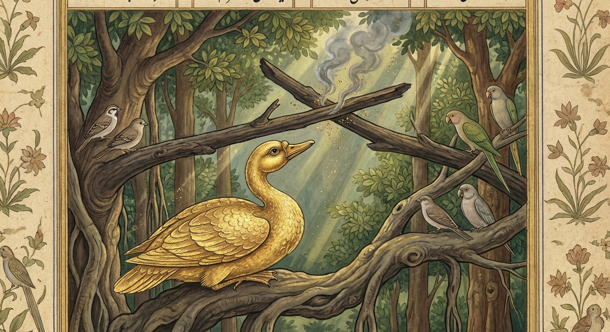

6. සකුණ ජාතකය (36)
“යං නිස්සිතා” (යමෙකු ඇසුරු කොට) යන මේ දේශනාව බුදුරජාණන් වහන්සේ ජේතවනාරාමයේ වැඩ වසන සමයෙහි, දැවී ගිය පන්සලක් ඇති භික්ෂුවක් අරබයා දේශනා කළ සේක. එක් භික්ෂුවක් බුදුරදුන් වෙතින් කමටහන් ගෙන ජේතවනයෙන් නික්ම කොසොල් දනව්වේ එක් පසල් ගමක් ඇසුරු කොට එක්තරා වන සෙනසුනක වාසය කරයි. ඉක්බිති වස් විසූ පළමු මාසයේම ඔහුගේ පන්සල දැවී ගියේය. ඔහු “මාගේ පන්සල දැවී ගියේය, මම දුකසේ වාසය කරමි” යි මිනිසුන්ට දැන්වීය. මිනිස්සු ඔහුට “ස්වාමීනි, දැන් අපගේ කුඹුරු වියළී ඇත;
- කුඹුරුවලට වතුර බැඳ පසුව (පන්සල) කර දෙන්නෙමු.
- (පසුව) බීජ වපුරා නිමවී කර දෙන්නෙමු.
- (පසුව) වැට බැඳ නිමවී කර දෙන්නෙමු.
- (පසුව) වල් නෙලා/කපා නිමවී කර දෙන්නෙමු.
- (පසුව) පාගා (කොළ මඩවා) නිමවී කර දෙන්නෙමු.”
යනාදී වශයෙන් ඒ ඒ කටයුතු දක්වමින්ම තුන් මසක් ගත කළහ. ඒ භික්ෂුව ද තුන් මසක් මුළුල්ලේ එළිමහනේ දුකසේ වාසය කරමින්, භාවනාව වඩා විශේෂයක් උපදවා ගැනීමට නොහැකි විය. වස් පවාරණය කොට බුදුරදුන් වෙත ගොස් වැඳ එකත්පස්ව හුන්නේය. බුදුරජාණන් වහන්සේ ඔහු සමඟ පිළිසඳර කතා කොට “කිම භික්ෂුව, සුවසේ වස් විසූයෙහිද? ඔබගේ භාවනාව මුදුන් පත් වීදැ?”යි විමසූ සේක. ඔහු ඒ පුවත දන්වා “සෙනසුන් සප්පායමේ (සුදුසු වාසස්ථානයක) අඩුව නිසා මාගේ භාවනාව මුදුන් පත් නොවිණැ”යි පැවසීය. ශාස්තෘන් වහන්සේ “භික්ෂුව, පෙර තිරිසන් සත්තු පවා තමාට සුදුසු නුසුදුසු දේ දැන සිටියහ, ඔබ කුමක් හෙයින් එය නොදත්තෙහිදැ”යි වදාරා අතීත කතාව ගෙනහැර දැක්වූ සේක.
අතීතයේ බරණැස් නුවර බ්රහ්මදත්ත රජු රාජ්යය කරන සමයෙහි බෝධිසත්වයෝ පක්ෂි යෝනියෙහි උපත ලබා, පක්ෂි සමූහයා පිරිවරා වනයෙහි අතුපතරින් හා කොළ අතුවලින් ගහන වූ මහා වෘක්ෂයක් ඇසුරු කොට වාසය කළහ. ඉක්බිති එක් දිනක් ඒ ගසෙහි අතු එකිනෙක ගැටෙන්නට වූයෙන් ලී කුඩු වැටෙන්නටත්, දුම නැගෙන්නටත් විය. එය දැක බෝධිසත්වයෝ මෙසේ සිතූහ: “මේ අතු දෙක මෙසේ ගැටීමෙන් ගින්නක් හටගනු ඇත. එය පහළට වැටී පරණ කොළ අල්ලා ගනු ඇත. එතැන් පටන් මේ ගස ද දවාලනු ඇත. අපට මෙහි විසිය නොහැකිය. මෙතැනින් පලා ගොස් අන් තැනකට යාම වටී.” එසේ සිතා බෝධිසත්වයෝ පක්ෂි සමූහයාට මෙම ගාථාව පැවසූහ.

“පක්ෂි සමූහයා යම් වෘක්ෂයක් ඇසුරු කළාහු ද, ඒ වෘක්ෂයම ගිනි මොළවයි; එබැවින් වක් වූ ගෙල ඇති පක්ෂයිනි, දිසාවන් බලා යව්. අපට ආරක්ෂිත ස්ථානයෙන්ම බිය හටගත්තේය.”
එහි “ජගතිරුහං” යනු: ‘ජගති’ නම් පොළොවයි. එහි හටගත් බැවින් ගසට ‘ජගතිරුහ’ යයි කියනු ලැබේ. “විහඞ්ගමා” යනු: ‘විහ’ යනු අහසයි. එහි ගමන් කරන බැවින් පක්ෂීන් ‘විහංගම’ යයි කියනු ලැබේ. “දිසා භජථ” යනු: මේ ගස අතහැර මෙතැනින් පලා යමින් සිව් දිසාවන් ඇසුරු කරවු. “වක්කඞ්ගා” යනු: පක්ෂීන් අමතන වචනයකි. ඔවුහු හිස (උත්තමාංගය) සහ ගෙල විටින් විට වක් (ඇද) කරති, එබැවින් ‘වක්කංග’ යයි කියනු ලැබේ. නැතහොත් ඔවුන්ගේ දෙපසෙහි පියාපත් වක්ව පිහිටි බැවින් ‘වක්කංග’ නම් වේ. “ජාතං සරණතො භයං” යනු: අපගේ ආරක්ෂක වෘක්ෂයෙන්ම බිය හටගත්තේය, එන්න වෙනත් තැනකට යමු (යන අදහසයි).
බෝධිසත්වයන්ගේ වචන පිළිගත් නුවණැති පක්ෂීහු ඔහු සමග එකවරම ඉගිලී අන් තැනකට ගියහ. නමුත් යම් ඒ අනුවණ පක්ෂීහු සිටියෝ ද, ඔවුහු “මොහු දිය බිඳුවක් පමණ වූ දියෙහිත් කිඹුලන් දකින කෙනෙකැ”යි පවසා (බිය නොවී), බෝධිසත්වයන්ගේ වචනය නොපිළිගෙන එහිම විසූහ. ඉන්පසු නොබෝ වේලාවකින්ම බෝධිසත්වයන් සිතූ ආකාරයටම ගිනි හටගෙන ඒ ගස අල්ලා ගත්තේය. දුම සහ ගිනිදැල් නැගුණු කල්හි, දුමින් දෙනෙත් අන්ධ වූ පක්ෂීහු අන් තැනකට යාමට නොහැකිව, ගින්නට වැටී වැටී විනාශයට පත් වූහ.
ශාස්තෘන් වහන්සේ “මහණ, මෙසේ පෙර තිරිසන් සත්තු පවා ගස් මුදුන්වල වසන්නාහු තමාට සුදුසු නුසුදුසු තැන් දනිති, ඔබ කුමක් හෙයින් නොදත්තෙහිදැ”යි මෙම ධර්ම දේශනාව ගෙනහැර දක්වා චතුරාර්ය සත්යය ප්රකාශ කළ සේක. සත්ය දේශනාව අවසානයේ ඒ භික්ෂුව සෝවාන් ඵලයෙහි පිහිටියේය. ශාස්තෘන් වහන්සේ ද පූර්වාපර සන්ධි ගළපා ජාතකය සමාප්ත කළ සේක: “එකල බෝධිසත්වයන්ගේ වචන පිළිගත් පක්ෂීන් මේ බුදු පිරිස වූහ. නුවණැති පක්ෂියා නම් මම ම වෙමි.”
සකුණ ජාතක වර්ණනාව යි. (හයවැනියි).